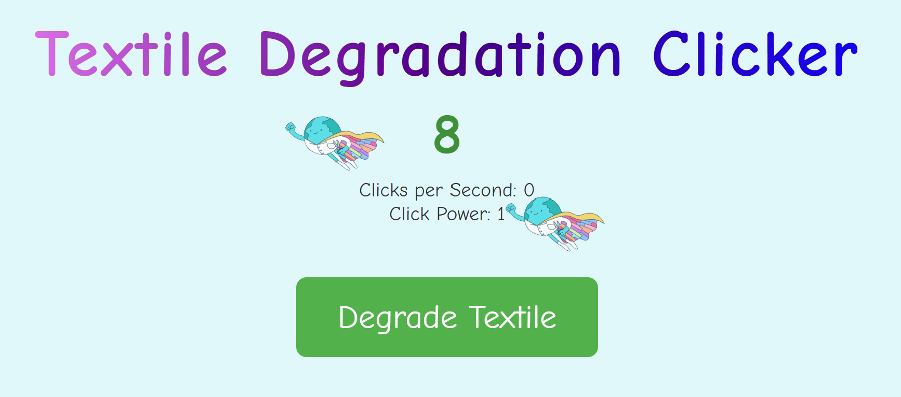

互動遊戲
Online Games
Games we designed to make synthetic biology fun, accessible, and memorable.
🌾
CropShield — Bioreactor Defender
Protect engineered crops from climate stress using targeted biological protectants.
Play now →
🦠
Enzyme-Substrate Match Defense
A game that illustrates the concept of enzyme specificity and our previous year's project on degrading PET plastic.
Play now →
Textile Degradation Clicker
A clicker game that explores the connection between sustainability, and finance.
Play now →